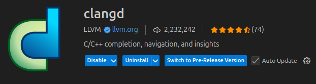

C linters
There isn't really "linting" when it comes to compiled languages. They are called static code analyzers, and we will use two: cppcheck and clang-tidy
For formatting, we will use clang-format.
These tools need to be installed by:
clangd

Command line integration
The static code analyzers can only be run from the command line.
Clang Format CLI
The best way to learn about the options and usage is to just call clang-format --help and read the commands.
To format files:
clang-format -i --verbose \
$(find . -path ./**build -prune \
-o -path ./venv -prune \
-o -name *.c -print \
-o -name *.h -print \
-o -name *.cpp -print)
To check for errors in style:
clang-format --dry-run --Werror --verbose \
$(find . -path ./**build -prune \
-o -path ./venv -prune \
-o -name *.c -print \
-o -name *.h -print \
-o -name *.cpp -print)
Note
Since clang-format does not support shell expansion for files, we use the find command to search for all .c, .cpp and .h files, excluding the ones found in any build directory or the python venv.
You can customize your own style options by creating a .clang-format file in the root of the repository, as specified in the Clang-Format Style Options.
Down below the recommended .clang-format file to be used is shown: you base your style on one of the predefined ones, and then tweak as you like.
To get the full style configuration from one of the main references, you can execute:
Clang Tidy CLI
CppCheck CLI
The best way to learn about cppcheck is to just execute cppcheck and see all the command line options.
The recommended execution command is as follows:
cppcheck --cppcheck-build-dir=<build/cppcheck> --check-level=<normal | exhaustive> --enable=all --disable=information --error-exitcode=1 -I <header_dir> .
Where:
--cppcheck-build-dir: By specifying a build dir, cppcheck stores artifacts for faster re-runs. This flag shouldn't be used in a CI runner.--check-level=<normal | exhaustive>: Use "normal" for everyday, use "exhaustive" for CI.--enable=all: Enable all checks.--disable=information: Disable the "information check", which reports about cppcheck usage, not the code.--error-exitcode=1: If any error is reported by cppcheck, return this exit code (by default, cppcheck always returns '0').-I: Include header directories..: Will check from this path recursively all C source files.
For any more details, go check the Cppcheck manual.
VS Code integration
Only the formatter can be integrated, since the static code analyzers need to be run specifically from the command line.

After installing the clang-format VS Code extension, add the following to the .vscode/settings.json file:
{
"files.autoSave": "onFocusChange",
"editor.formatOnSave": true,
"editor.formatOnPaste": true,
"editor.formatOnSaveMode": "file",
"clang-format.style": "file",
"clang-format.fallbackStyle": "LLVM",
"[c]": {
"editor.defaultFormatter": "xaver.clang-format"
},
"[cpp]": {
"editor.defaultFormatter": "xaver.clang-format"
},
}
The extension is going to search for a .clang-format file in the root of the folder you have open with VS Code. If it doesn't find it, it will use the LLVM style by default.
CI integration
Normally, these tools are included in your compilation environment, so calling the formatter and static code analyzers are steps included in the build CI. Just for completeness, this is how a CI would look like: